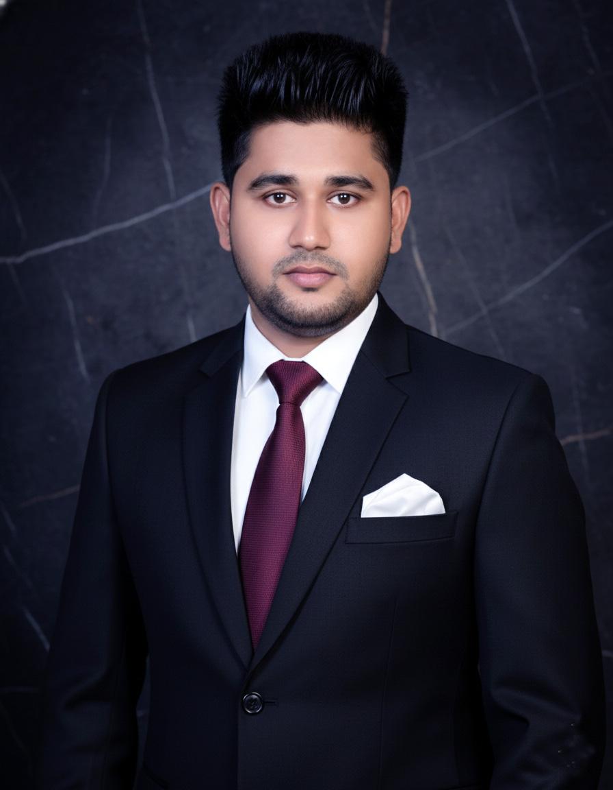

IN PROGRESS
Master by Research in Electrical Engineering
University of Malaya, Malaysia
ACADEMIC PORTFOLIO · ELECTRICAL ENGINEERING
Researching the intersection of artificial intelligence, renewable energy, and intelligent energy systems—with a focus on solar photovoltaic forecasting for sustainable industrial energy management.

INTRODUCTION
I am a Master by Research student in Electrical Engineering at the University of Malaya, with a strong interest in renewable energy, artificial intelligence, and smart energy systems.
My current research explores AI-based forecasting of solar photovoltaic generation and its potential to support more effective energy management in Bangladesh’s garment industry. I am interested in developing predictive models that connect environmental and energy data with practical decisions for industrial sustainability.
My academic interests include machine learning, deep learning, time-series analysis, and renewable energy integration.
ACADEMIC BACKGROUND
University of Malaya, Malaysia
European University of Bangladesh · CGPA 3.60/4.00
Kushtia Polytechnic Institute · CGPA 3.51/4.00
Kumarkhali M.N. Pilot High School · GPA 4.77/5.00
RESEARCH PROFILE
Forecasting solar PV generation using historical production and meteorological variables.
Applying ANN, LSTM, and hybrid machine-learning approaches to time-series prediction.
Exploring how reliable forecasts can support industrial energy planning and renewable integration.
Investigating irradiance, UV index, temperature, humidity, and cloud-cover effects.
Developing and evaluating AI-based solar generation forecasting approaches to support smarter energy management in garment manufacturing environments.
CAPABILITIES
Certificates of completion from the Australian Industry Graduate Research School (AIGRS).
Australian Industry Graduate Research School (AIGRS)
Instructor: Asst. Prof. Faheem Ullah
Certificate ID: AIGRS-100063-17
Australian Industry Graduate Research School (AIGRS)
Instructor: Asst. Prof. Faheem Ullah
Certificate ID: AIGRS-100061-11
Australian Industry Graduate Research School (AIGRS)
Instructor: Asst. Prof. Faheem Ullah
Certificate ID: AIGRS-100062-35
Australian Industry Graduate Research School (AIGRS)
Instructor: Dr Claire Moran
Certificate ID: AIGRS-100071-28
Australian Industry Graduate Research School (AIGRS)
Instructor: Dr Claire Moran
Certificate ID: AIGRS-100069-36
Australian Industry Graduate Research School (AIGRS)
Instructor: Dr Claire Moran
Certificate ID: AIGRS-100070-15
Australian Industry Graduate Research School (AIGRS)
Instructor: Dr Jenine Beekhuyzen
Certificate ID: AIGRS-100066-52
Verify an AIGRS certificate ↗ using its certificate ID.
SCHOLARLY OUTPUT
Publications and conference contributions will be listed here as they become available.
CURRICULUM VITAE
View my education, research interests, technical skills, and experience.
GET IN TOUCH
Open to academic discussions and research collaboration in renewable energy, AI forecasting, and intelligent energy systems.